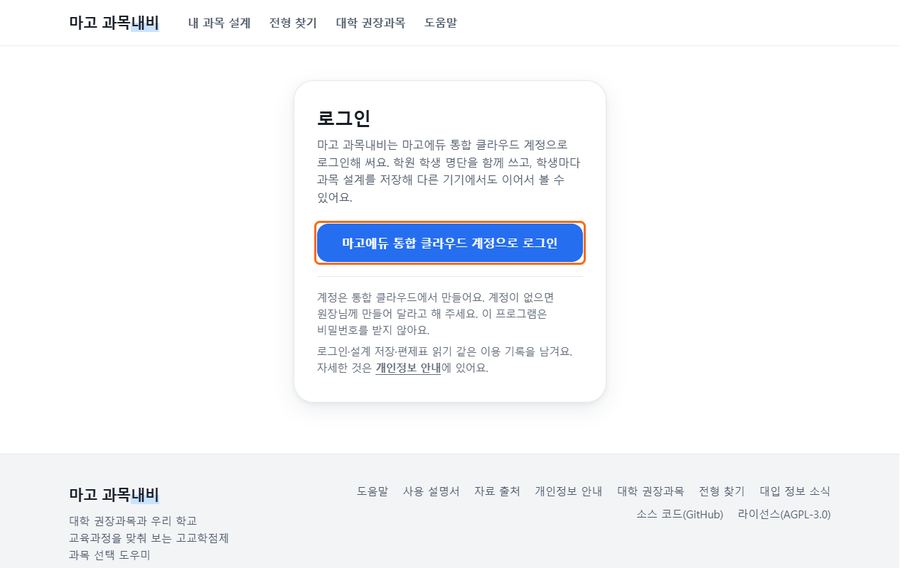
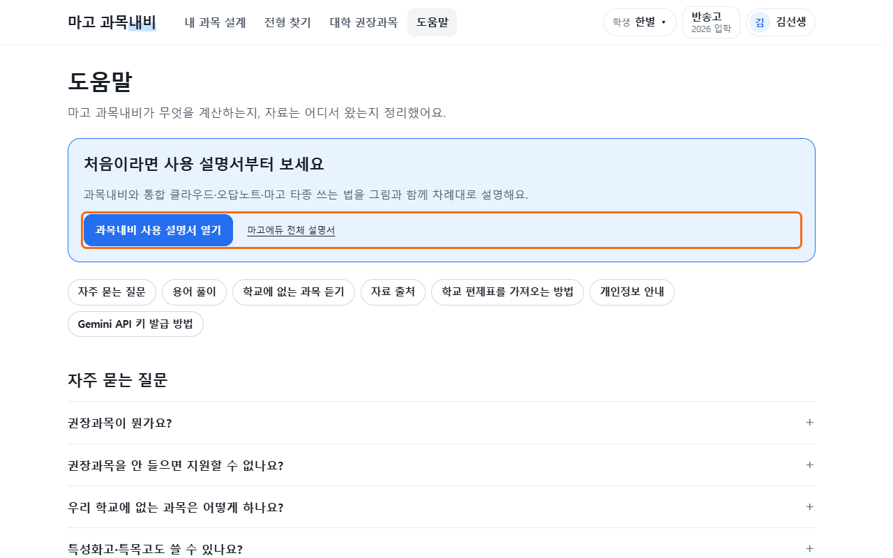
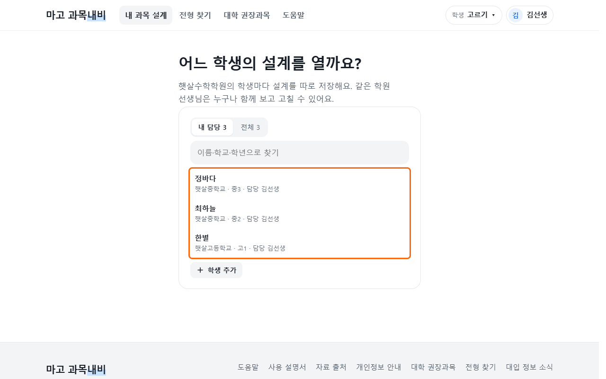
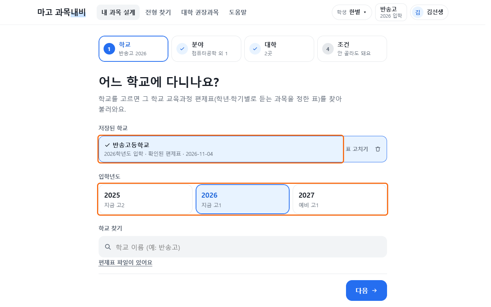
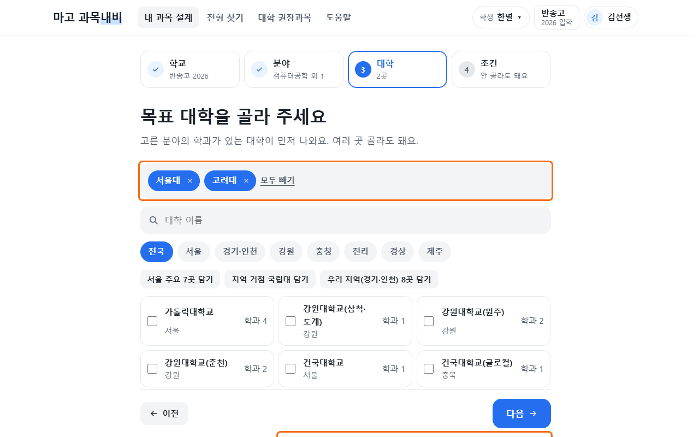
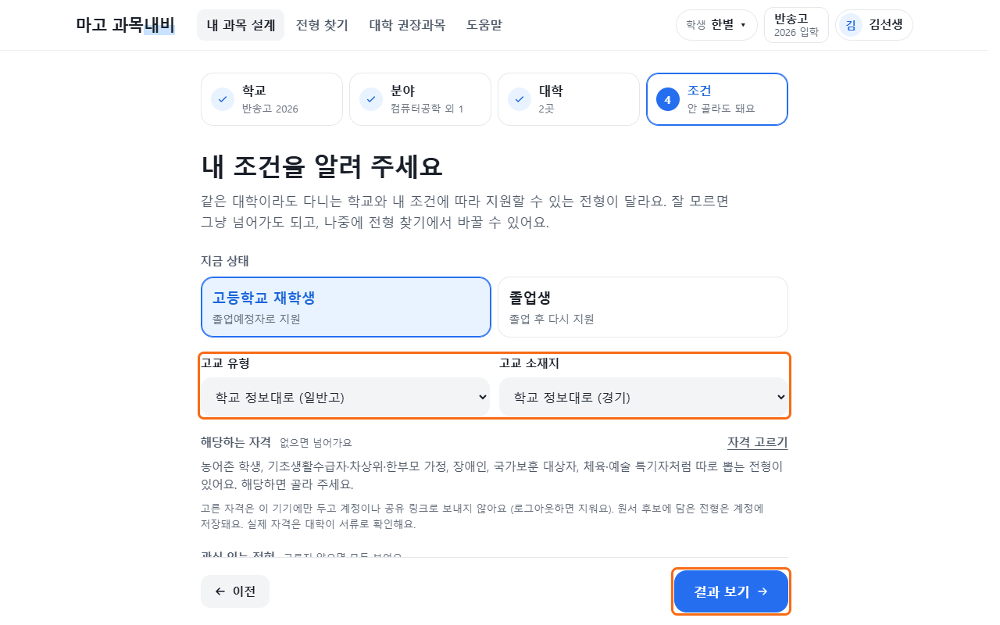
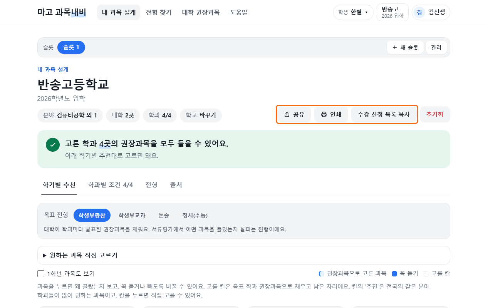
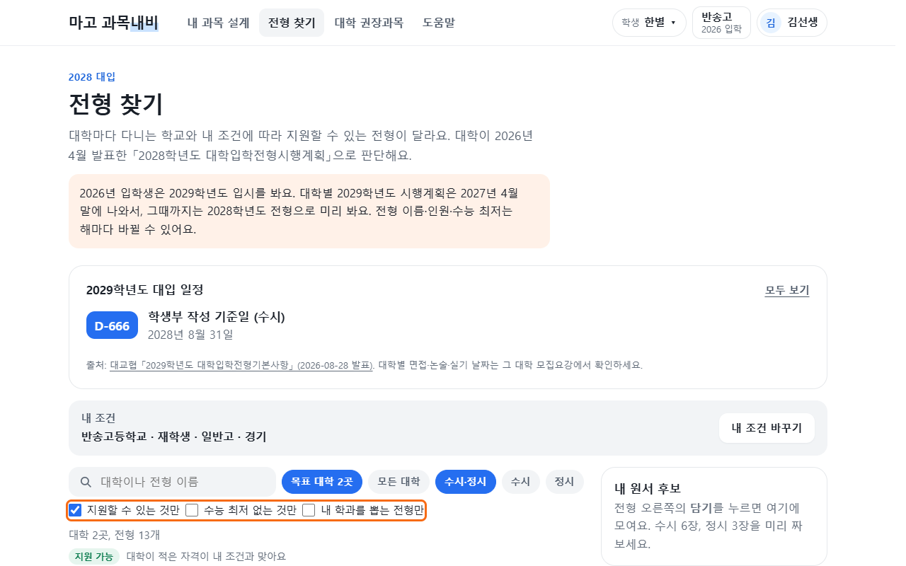
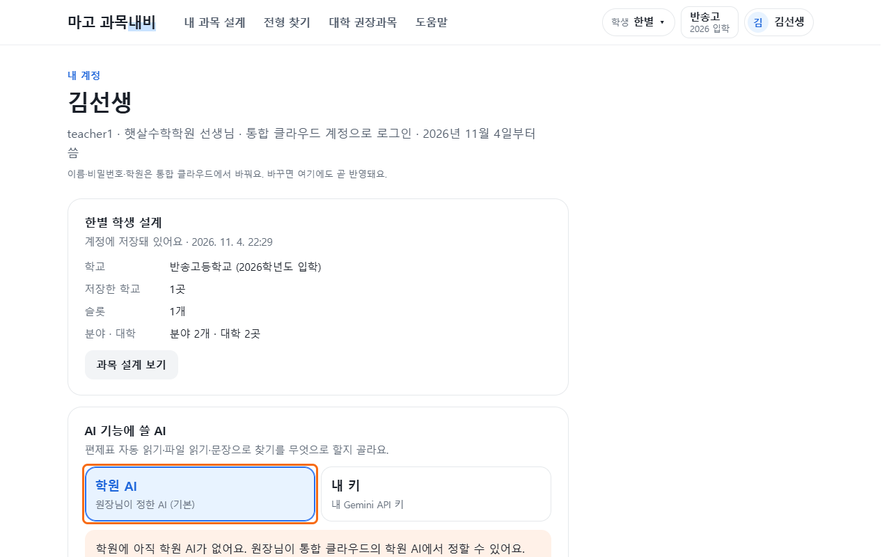

마고 과목내비 사용법
학생의 학교와 희망 진로를 골라 고등학교에서 들을 과목을 설계합니다. 학생 → 학교 → 분야 → 대학 → 조건 → 결과 순서로 시작합니다.
웹·PC에서 열기
웹에서 열기 — 원장·선생님·학생
- 과목내비 주소를 엽니다.
브라우저에서 magonavi.milky.kr을 엽니다.
- 통합 클라우드 계정으로 로그인합니다.
마고에듀 통합 클라우드 계정으로 로그인을 누릅니다. 통합 클라우드에서 로그인하면 다시 과목내비로 돌아옵니다. 과목내비에서 별도로 가입하거나 비밀번호를 만들지 않습니다.

과목내비 로그인
PC판에서 열기 — 원장·선생님
PC 통합 클라우드의 → 마고 과목내비 설치 → 열기를 누릅니다. 통합 클라우드 계정으로 자동 로그인됩니다.
이 안내는 과목내비 사용 설명서 열기 또는 바닥글·계정 메뉴의 사용 설명서에서 다시 엽니다.

학생 고르기·추가
원장·선생님은 먼저 누구의 설계를 만들지 정합니다. 학생 계정이면 내 설계가 바로 연결되므로 다음 학교 고르기로 이동합니다.
- 설계할 학생을 고릅니다.
처음의 학생 선택 화면이나 머리글의 학생에서 이름을 찾습니다. 학원 명단에서 고르기가 보이면 눌러 명단을 펼칩니다.

학생 선택 - 명단에 없으면 학생을 추가합니다.
학생 목록 아래 학생 추가에서 이름·학교·학년을 입력하면 같은 학원 학생 명단에 들어가고, 그 학생의 설계가 바로 열립니다. PC판의 학원 명단에서 고르기에는 추가 버튼이 없으니 통합 클라우드 에서 추가합니다. 학생 추가·계정 만들기
- 학생 이름을 확인하고 시작합니다.
설계는 학생마다 따로 저장됩니다. 같은 학원 선생님은 같은 학생의 설계를 함께 보고 고칠 수 있습니다.
학교 고르기
편제표는 학교에서 학년·학기별로 어떤 과목을 몇 학점 듣는지 정한 표입니다. 같은 학교여도 입학년도에 따라 다릅니다.
- 시작하기에서 학교를 찾습니다.
의 단계에서 학교 이름을 찾아 고릅니다. 입학년도는 고등학교에 들어간 해를 고릅니다.

학교·입학년도와 편제표 확인 - 내 학교의 표를 불러옵니다.
학교가 제안되면 이 학교 편제표 불러오기를 누릅니다. 학과나 과정이 여러 개면 학생이 다니는 것을 고릅니다.
- 불러온 표를 확인합니다.
과목과 학점이 원래 학교 자료와 맞는지 봅니다. 표를 찾지 못했으면 편제표 파일이 있습니다 또는 편제표 파일 올리기에서 학교의 파일을 올립니다. 직접 입력할 수도 있습니다.
자동으로 읽은 표가 틀리면 안내의 표 열어서 확인하기로 고칩니다. 저장해 둔 학교 표를 고칠 때는 표 고치기를 찾습니다. 표가 준비되면 분야 단계로 넘어갑니다.
분야 고르기
- 관심 있는 분야를 고릅니다.
에서 희망 진로에 맞는 분야를 누릅니다. 여러 개 골라도 됩니다. 분야 안의 세부 학과로 더 좁힐 수 있습니다.
분야·학과 선택 - 골랐으면 다음으로 이동합니다.
선택한 분야를 확인하고 다음을 누릅니다. 학과 이름으로 찾을 수도 있습니다.
‘게임 제작’처럼 문장으로 찾는 기능은 정밀 인식을 사용합니다. 정밀 인식이 준비되지 않아도 분야와 학과를 직접 고를 수 있습니다.
대학 고르기
- 목표 대학을 고릅니다.
에서 관심 있는 대학을 누릅니다. 여러 곳 골라도 됩니다. 고른 분야의 학과가 있는 대학이 먼저 나옵니다.

대학 선택 - 선택한 대학을 확인합니다.
원하지 않는 대학은 선택을 풀고 다음을 누릅니다.
조건 고르기 — 안 골라도 됩니다
- 알고 있는 조건만 고릅니다.
에서 학생에게 맞는 학교 유형·지역·특별 자격 등을 확인합니다. 잘 모르겠으면 비워 두어도 됩니다.

지원 조건 - 결과를 엽니다.
결과 보기를 누릅니다. 조건은 나중에 에서 다시 바꿀 수 있습니다.
내 과목 설계 보기·고치기
- 학기별 추천을 봅니다.
의 에서 학기마다 어떤 과목을 들을지 확인합니다. 1학년 과목도 보기를 켜면 1학년 과목도 함께 보입니다.

공유·인쇄·수강 신청 목록 복사와 학기별 과목 설계 - 원하는 과목을 직접 넣거나 뺍니다.
원하는 과목 직접 고르기를 펼칩니다. 넣기로 꼭 들을 과목을 정하고, 빼기로 추천에서 제외합니다. 뺀 과목은 다시 넣기로 돌려놓을 수 있습니다.
- 바뀐 추천과 안내를 확인합니다.
꼭 듣기로 한 과목이 먼저 자리를 잡고 남은 칸이 다시 채워집니다. 같은 시간대의 선택 수나 두 학기 세트 때문에 다른 과목도 함께 바뀔 수 있습니다.
다른 설계와 비교
새 설계안으로 설계를 따로 보관합니다. 빈 설계를 시작하거나 현재 설계를 복사할 수 있습니다. 설계안 이름을 눌러 이동하며, 고친 내용은 현재 설계안에 저장됩니다.
처음 추천으로 돌아가려면 초기화를 누릅니다. 꼭 듣기·빼기만 지울지, 지금 설계안의 선택을 더 넓게 비울지 안내를 보고 고릅니다.
권장과목은 대학이 해당 학과에 들으면 좋다고 안내한 과목입니다. 권장과목을 안 들었다고 무조건 지원 불가인 것은 아닙니다. 학교에 없는 과목은 학교 선생님에게 공동교육과정이나 온라인학교 수업을 문의합니다.
전형 찾기
전형은 대학이 학생을 선발하는 방법입니다. 에서 대학·전형 종류와 내 조건을 맞춰 살펴봅니다.

- 지원 가능: 입력한 조건과 자료로 보았을 때 지원 자격에 맞습니다.
- 확인 필요: 학교장 추천이나 증빙 서류 등 확인할 것이 있습니다.
- 지원 불가: 지금 입력한 조건이 해당 자격에 맞지 않습니다.
관심 있는 전형의 담기를 누르면 에 모입니다. 이 표시들은 합격 예측이나 실제 원서 접수가 아닙니다. 최종 지원 자격과 일정은 대학의 최신 모집요강에서 확인합니다.
정밀 인식 기능과 설정
정밀 인식은 학교 편제표를 파일에서 읽거나, 하고 싶은 일을 문장으로 검색할 때 사용합니다. 분야·대학·과목을 직접 고르는 일에는 꼭 필요하지 않습니다.
- 계정 화면의 정밀 인식 설정을 확인합니다.
원장·선생님은 계정 화면에서 학원 AI와 내 키 중 쓸 것을 고를 수 있습니다.

학원 AI·내 키 선택 - 처음에는 학원 AI를 사용합니다.
학원 AI를 권합니다. 준비되지 않았다면 원장에게 통합 클라우드의 학원 AI 설정을 요청합니다.
내 키는 개인 서비스 연결용 비밀키를 직접 등록하는 방법입니다. 설정이 어렵다면 원장과 상의합니다. 학생 계정의 정밀 인식은 선생님이 정하므로 학생이 키를 따로 넣지 않습니다.
‘학원 안 주소에 있어 웹에서는 부를 수 없습니다’라는 안내가 나오면 원장에게 알립니다. 웹에서 연결할 수 있는 설정인지 확인이 필요합니다.
학생 계정으로 쓰기
- 웹에서 엽니다.
통합 클라우드 웹의 → 열기를 누르거나 magonavi.milky.kr을 엽니다.
- 내 학생 계정으로 로그인합니다.
마고에듀 통합 클라우드 계정으로 로그인을 누릅니다. 선생님이 준 초대로 만든 계정이나 아이디를 사용합니다. 아직 학생 계정이 없다면
- 내 설계를 이어서 봅니다.
내 학생 정보로 바로 연결됩니다. 다른 학생을 골라 볼 수는 없습니다. 처음이면 학교 → 분야 → 대학 → 조건 → 결과 보기로 시작합니다.
- 바꾼 내용을 선생님과 확인합니다.
내 과목을 고치거나 공유·인쇄·목록 복사를 쓸 수 있습니다. 같은 학생 설계이므로 선생님도 내용을 함께 봅니다.
이름·학교·담당 선생님 같은 명단 정보가 틀리면 선생님에게 말씀드립니다. 비밀번호는 통합 클라우드 내 계정에서 바꿉니다.